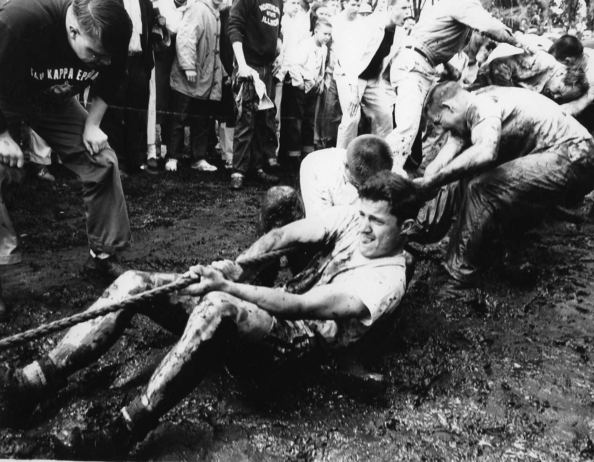

Photo Gallery
A look back at decades of tradition, training, and triumph on the rope.



Have photos from your era? Submit them below to be featured in the gallery.
Once a tugger, always a tugger.
What started as a friendly tug-of-war match over the East Lagoon during NIU's Spring Fest quickly captured the imagination of the Greek community. A handful of fraternities competed in that first event, planting the seeds of a decades-long tradition.
Throughout the 1980s, Pike established one of the most dominant runs in NIU Tugs history, claiming the championship nearly every year of the decade. Their dominance set the standard for what it meant to compete at the highest level, and created a culture of intense training and brotherhood that influenced every fraternity that followed.
The 1990s saw Pike continue its reign while new challengers emerged. Delta Upsilon broke through mid-decade, and SigEp became a consistent contender. Competition intensified as more fraternities invested seriously in training programs, raising the overall level of the tournament.
The 2000s ushered in a new cast of powerhouses. SigEp strung together three consecutive titles early in the decade, before Pike reclaimed the throne. Later years saw the Skulls emerge as fierce competitors. Each championship brought with it stories of grueling preparation and unforgettable match-week moments.
Phi Sigma Kappa became the dominant force of the 2010s, winning multiple titles across the decade. Sigma Nu and Phi Kappa Theta also emerged as serious contenders. The tournament continued to grow in prestige, drawing larger crowds of alumni returning to campus each spring to watch match week.
For the first time in over fifty years, NIU Tugs was cancelled — a casualty of the COVID-19 pandemic. The absence only deepened appreciation for the tradition and the bonds it creates. Alumni from across the country reflected on what the tournament meant to them and looked forward to its return.
NIU Tugs came back stronger than ever in 2021. Sigma Nu put together a dominant three-peat from 2022–2024, before Phi Kappa Psi claimed the 2025 title. Today the tournament is as competitive as it has ever been, carrying forward nearly sixty years of tradition, brotherhood, and unforgettable match-week memories.
A look back at decades of tradition, training, and triumph on the rope.

Have photos from your era? Submit them below to be featured in the gallery.
Help us preserve the history of NIU Tugs. Share photos from your years competing and we'll add them to the gallery.
Use our Google Form to upload photos directly — files go straight to our Drive so nothing gets lost.
Open Photo Submission FormWhether you want to reconnect with brothers, share a memory, or just let us know where life has taken you — we'd love to hear from you.
Fill out the form below to be added to our alumni list and stay connected with fellow tuggers.
Alumni are always welcome to come cheer on the next generation. Match week is held every April on campus.
View ScheduleFill out our form to be added to the alumni network and stay connected with fellow tuggers.
Open Reconnect Form